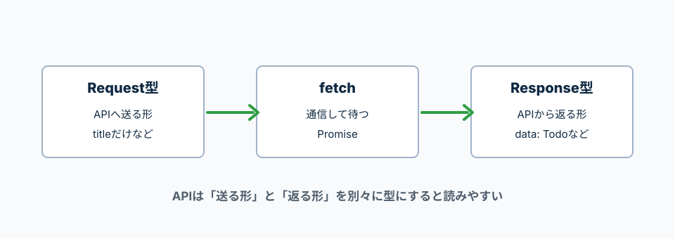

引数、戻り値、Promise、APIレスポンスに型を付ける。
TypeScript公式のMore on Functionsでは、関数の引数や戻り値へ型を付ける方法が整理されている。
API通信では、Promiseと返却データの型を読むことが重要。
引数には受け取る値の型、関数の後ろには返す値の型を書く。
戻り値の型は省略できることも多いが、最初は書くと読みやすい。
TypeScriptの型は、呼ぶ側が渡せる値を制限する。
function createMessage(name: string): string {
return `${name}さん、こんにちは`;
}
const message = createMessage('太郎');
console.log(message);
name: string
nameには文字列だけ渡せる。createMessage(123)のような呼び方は型エラーになる。
): string
この関数は文字列を返す。
JavaScriptでは、関数に何を渡しても実行時まで分かりにくい。
TypeScriptでは、関数を呼ぶ時点で「渡してよい値か」を確認できる。
function addPrice(price: number, taxRate: number): number {
return price + price * taxRate;
}
const total = addPrice(1000, 0.1);
console.log(total);
price: number
priceには数値だけ渡せる。文字列を渡すとTypeScriptが止める。
): number
この関数は数値を返す。returnする値もnumberである必要がある。
APIでは、送るデータと返ってくるデータの形が違うことが多い。
Request型とResponse型を分けると、どこで何を扱っているか分かりやすい。

Laravel APIから返るTodoの形をTypeScript側でも作っておく。
これで、画面側でtodo.titleなどを安全に使える。
type Todo = {
id: number;
title: string;
is_done: boolean;
created_at: string;
updated_at: string;
};
type TodoIndexResponse = {
data: Todo[];
};
Todo
Todo1件分の形。
Todo[]
Todoが複数入った配列。
data: Todo[]
Laravel API Resourceの一覧返却でよく出る形。
Promise<TodoIndexResponse> は、非同期処理の結果としてTodoIndexResponseが返るという意味。
awaitした後は、TodoIndexResponseとして扱える。
async function getTodos(): Promise<TodoIndexResponse> {
const response = await fetch('/api/todos', {
headers: {
Accept: 'application/json',
},
});
if (!response.ok) {
throw new Error('Todoの取得に失敗しました');
}
return response.json();
}
async function
非同期処理を書く関数。中でawaitを使える。
Promise<TodoIndexResponse>
待った結果、TodoIndexResponseが返るという意味。
response.json()
APIから返ったJSONをJavaScriptの値として受け取る。
登録時は、idやcreated_atはまだない。
APIへ送る形と、APIから返る形は分けると分かりやすい。
type StoreTodoRequest = {
title: string;
};
type StoreTodoResponse = {
data: Todo;
};
async function createTodo(payload: StoreTodoRequest): Promise<StoreTodoResponse> {
const response = await fetch('/api/todos', {
method: 'POST',
headers: {
Accept: 'application/json',
'Content-Type': 'application/json',
},
body: JSON.stringify(payload),
});
if (!response.ok) {
throw new Error('Todoの登録に失敗しました');
}
return response.json();
}
StoreTodoRequest
APIへ送るデータの形。
StoreTodoResponse
APIから返ってくるデータの形。
payload
登録APIへ送る中身。ここではtitleだけ。